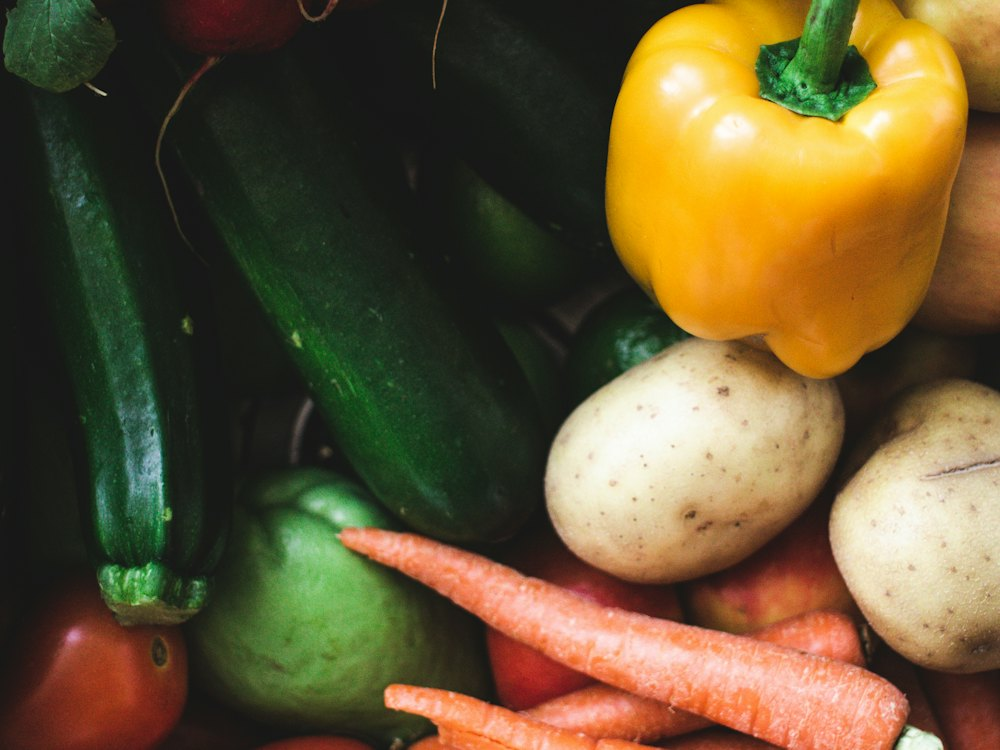

TOIMART · Жандосова
Магазин · Супермаркет · Алматы
Рейтинг
★ 4.8
1 552 оценок
Год открытия
2014
первый TOIMART (дискаунтер напитков) открыт в Алматы в 2014 г.
Средний чек
≈6 000 ₸
оценка по типу заведения
Адрес и часы
📍 ул. Жандосова, 21, Алматы · Алатауский район
🕒 часы работы уточняются — смотрите в 2ГИС
О заведении
Супермаркет TOIMART.
Популярные товары
Рядом в справочнике
Time Cafe "Relax · Tirol · TOIMART · Барыс IV · Tok burger · Tok poki · Toki Poki